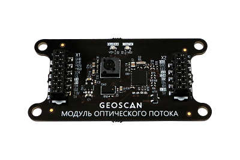

Модуль оптического позиционирования¶
Модуль позволяет позиционировать квадрокоптер, используя оптический датчик, который отслеживает смещение объектов. Это дает возможность удерживать положение и летать в автоматическом режиме без системы навигации и GPS.